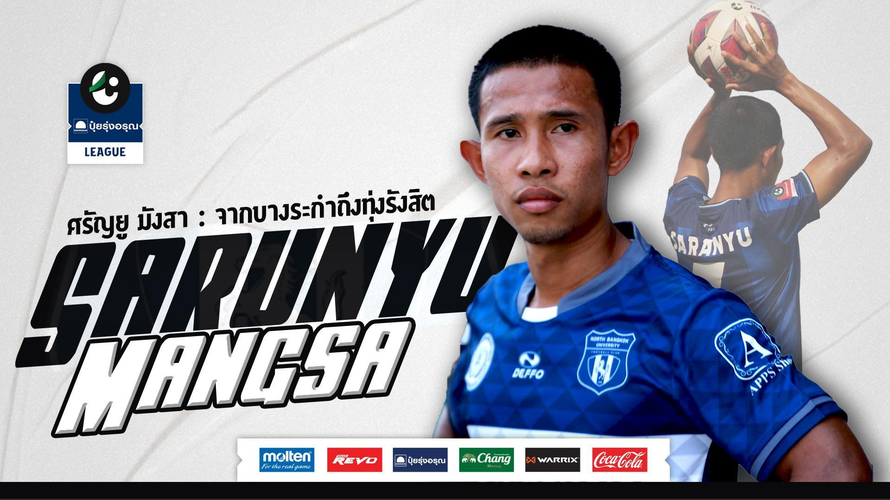

จากบางระกำถึงทุ่งรังสิต : ศรัญยู มังสา (มหาวิทยาลัยนอร์ทกรุงเทพ) |
|  |
| หากพูดถึง หนึ่งในขุมกำลังหลัก ของทัพ "อาชาผยอง" มหาวิทยาลัยนอร์ทกรุงเทพ ตลอด 5 ปีหลัง ชื่อของ "ต้น" ศรัญยู มังสา แบ็กขวาคือชื่อหนึ่งที่ถูกพูดถึง ถึงฟอร์มการเล่นที่คงเส้นคงวา และเป็นผู้นำในบรรดาน้องๆ แข้งพลังหนุ่ม ไล่ล่าความสำเร็จมาตลอด 5 ปี ที่ทีมเป็นเจ้าของแชมป์โซนเมืองหลวงมาโดยตลอด เส้นทางของเจ้าตัว จากบางระกำ เมืองพิษณุโลก สู่ ทุ่งรังสิต กว่า 8 ปี ณ ที่แห่งนี้ มีเรื่องราวมากมายให้น่าจดจำ กับปีที่เขา ก้าวมาเป็น "พี่ใหญ่" อย่างเต็มตัว ในภารกิจ ที่จะต้องบังคับ "อาชาไนย" ให้ "ผยอง" เหนือทีมใดทั้งปวงอีกครั้ง - หากว่ากันถึงจุดเริ่มต้นของ ด.ช.ต้น ต้องปักหมุดที่ อ.บางระกำ จ.พิษณุโลก เขาเกิดมาเหมือนเด็กบ้านนอกลูกหลานชาวนาทั่วไป ที่มีคุณพ่อ และคุณอาเป็นคนบ้าฟุตบอล และเป็นสองคนนี้เองที่มีอิทธิพลต่อการเล่นฟุตบอลของตัวเขา เพราะการที่ได้ซึมซับ หัดเล่นกับบรรดาญาติๆ กัน "ตอนอยู่บ้าน ผมเลิกเรียนมา จะมีอาคอยชวนเตะบอลที่บ้าน ที่บ้านเขาจะอยู่กัน 5-6 คนเตะบอลเล่นกัน บอลขาวดำเก่าๆ และพ่อเองเขาชอบพูดเรื่องบอลกับอา และอาจจะเป็นจุดเริ่มต้นตอนนั้น" แต่กว่าที่เจ้าตัว จะได้ฝึกลูกหนังเป็นจริงเป็นจัง ก็เข้าสู่ช่วงมัธยมต้น ที่ครูบาอาจารย์เห็นแวว และแนะนำไปคัดตัวที่โรงเรียนกีฬา อบจ.พิษณุโลก ซึ่งเป็นเป็น "ตักศิลา" ลูกหนังแห่งแรกจริงๆ ของเขาเอง "พอดีจบมัธยมต้น ครูที่โรงเรียนเขาแนะนำให้ไปอยู่ ร.ร.กีฬา อบจ.พิษณุโลก ผมก็ไปสอบ ครูสมัย ม.ต้น เขาพาผมไปยื่นใบสมัครสอบ พอไปสอบ ผมทำทดสอบทุกอย่างตามที่กฎระเบียบที่ต้องเข้า ร.ร.กีฬา หมด ผมได้อันดับ 3 ของโควต้าที่ได้เข้าเรียน" "มีช่วงหนึ่งที่เพื่อนที่อยู่ติดกันเขามาคัดติด แล้วเขาออก ตอนนั้นเราอยากออก แต่พ่อกับแม่ไม่อยากให้ออก อยากให้สู้ แกเลยทำกับข้าวมากินด้วยกันตอนเย็นหลังเลิกซ้อม ขออนุญาตครูเวรมาประจำวันมานั่งกินข้าวกับผู้ปกครอง ตรงนั้นเลยเป็นจุดเปลี่ยนที่ทำให้เราอยากสู้ ไม่ว่าปัญหาอะไร" อาหารแต่ละมื้อ คำพูดของพ่อและแม่ ส่งผลให้เจ้าต้น ตัดสินใจเดินหน้าอดทนสู้และเดินหน้าต่อจนเรียนจบมัธยมปลาย ซึ่งในช่วงเวลา 3 ปีนั้น เขาได้พบกับ อดีตนายทวารหนุ่มผู้ผันตัวมาเป็นครูสอนฟุตบอลนาม "ดำรงศักดิ์ บุญม่วง" ที่เข้ามาสอนที่โรงเรียนในฐานะ ครูเพิ่งจบใหม่หมาดๆ และเป็นความผูกพันจนได้มาร่วมงานกันอีกครั้งที่ มหาวิทยาลัยนอร์ทกรุงเทพ ในปี 2015 "ช่วงที่ผมกำลังขึ้น ม.5 โค้ชเก่าตอน ม.4 ออก แล้ว โค้ชแบงค์เข้ามาทำทั้ง 3 รุ่นเลย รุ่น 14-16-18 แล้วผมได้มาอยู่กับโค้ชแบงค์ แกเลยมาทำต่อและตามมาอยู่กับแกที่ ม.นอร์ทฯ" และนั่นเป็นใบเบิกทางสู่ลูกหนังอาชีพ โลกฟุตบอลที่กว้างกว่าชีวิตลูกหนังขาสั้น หลายขุมนัก ตลอดระยะเวลา 8 ปี ของเขา เขาพาทัพ “อาชาผยอง” เป็นแชมป์โซนกรุงเทพฯ และปริมณฑล 5 สมัย ลงเล่นให้กับทีมไม่ต่ำกว่า 100 นัด นับเฉพาะในเวทีลีกอาชีพ ไม่รวมถึงสมัยที่เล่นให้ทีมในนามฟุตบอลมหาวิทยาลัย แต่ใครจะรู้ว่า ครั้งแรก เขาต้องปรับตัวและใช้เวลากว่า 1 ปี ในการขึ้นมาเป็นตัวหลักจนถึงวันนี้ "ผมเข้ามาอยู่กับ ม.นอร์ทฯ ตั้งแต่ปี 2015 แต่ปีแรกไม่ได้เล่น มาเล่นอีกทีในปี 2016 มันตื่นเต้น กดดัน เพราะไม่เคยเจอฟุตบอลในแบบกรุงเทพ มันต่างกับที่พิษณุโลกเยอะ เรื่องของพักบอล แท็กติก พลกำลัง ศาสตร์ฟุตบอล ผมว่าต่างกันเยอะ ต้องปรับตัวเยอะ แต่ด้วยความคุ้นชินกับโค้ช ที่เคยอยู่ด้วยกัน เลยเข้าใจความต้องการของโค้ชด้วย และเข้าใจแท็กติกที่โค้ชอยากได้" "ตอนลงเล่นนัดแรก มันกดดันเพราะเราอยากทำให้ดีที่สุด แต่ตอนนั้นทุกอย่างมันใหม่หมดเลย ไม่รู้จักลีก ความมืออาชีพ เราต้องเรียนรู้จากพี่ๆ ค่อยๆ เรียนรู้จากสตาฟฟ์โค้ชและค่อยๆ ปรับตัว เพราะทั้งทีมที่เล่นด้วยกันใหม่หมด" แต่ในปีแรกที่เจ้าตัวได้ลงเล่น ทีมจบที่อันดับ 7 ของตาราง แต่ด้วยฟอร์มส่วนตัวที่ดี ทำให้ในปี 2017 ปีเดียวกับที่ "ครู" ของเจ้าตัวอย่าง ดำรงศักดิ์ บุญม่วง ก้าวขึ้นมาเป็นหัวหน้าผู้ฝึกสอนของทัพ “อาชาผยอง” เขากลายเป็น "เบอร์หนึ่ง" ของกราบขวา และพาทีมเป็นแชมป์โซนถึง 5 สมัย ซึ่งเขามองว่าเป็นควาท้าทายอย่างหนึ่ง เพราะทุกๆ ทีม ต่างมีเป้าหมายเดียวกันในการอยากลองดีแชมป์หลายสมัยอย่างพวกเขา "ผมว่ามันท้าทาย เพราะทุกปีมีอะไรให้ลุ้น มีปัญหาอะไรให้เจอมากมาย เช่นปีนี้ ผมว่ามันไม่ใช่เรื่องแปลกที่ไม่ชนะ แต่ว่าเป็นความท้าทายที่ต้องเจอในทุกๆ ปี ผมว่าทุกๆ ทีมต้องเจอ ใครเจอก่อนเจอหลัง แต่ผมว่าปีนี้เราเจอก่อน ผมมองว่าเป็นผลดีที่เราปัญหาเจอเร็ว ซึ่งผมมองว่ามันอาจให้เราเสียแต้มเยอะถ้าเจอปัญหาช้า" - และแน่นอนที่สุด ในวัย 28 ปี และอนาคตที่อาจจะถึงเวลาต้องอำลาทัพ “อาชาผยอง” เขายังคงมีความฝันที่อยากจะโลดแล่นบนไทยลีก เฉกเช่นเดียวกับเพื่อนในทีมหลายรายที่ก้าวขึ้นไปเล่นก่อนหน้าเขาแล้ว "ผมว่าทุกคนอยากเล่นไทยลีก 1 ผมเองก็หวัง ถ้ามีโอกาสกว่านั้น เราอยากไปไกลกว่านั้น ในความหวังเราอยากเอาที่เราคว้าได้ ในความคิดผม ผมรอโอกาสที่ไปตรงนั้น เพียงแต่ว่าจะเป็นตอนไหน ผมมองว่าคนอื่นได้เจอสิ่งใหม่ๆ ก่อน ผมอยู่ตรงนี้ เราก็รอโอกาสอยู่" ท้ายที่สุด กับเรื่องราวจากบางระกำจนถึงทุ่งรังสิต ได้ขัดเกลาชีวิต และฝีเท้าของ ศรัญยู มังสา ให้เติบโตและเป็นที่พึ่งในวันที่เป้าหมายของทัพ “อาชาผยอง” มีความท้าทายและอยากจะก้าวข้ามผ่านกำแพงที่มีชื่อว่า "ไทยลีก 3" ให้ได้ในวันหนึ่ง แต่จะเป็นช่วงไหน มีแต่ตัวเขาและพรหมลิขิตจะประสงค์เป็นฉันใด... |
Fixtures|Results |
| Saturday 1 March |
UTFC  18:00 18:00  BRUTD BRUTD |
NPFC  18:00 18:00  RYFC RYFC |
BGPU  19:00 19:00  MTUTD MTUTD |
PORT  19:00 19:00  NRMFC NRMFC |
| Saturday 2 March |
CRUTD  18:00 18:00  RBFC RBFC |
SKTFC  18:00 18:00  BUFC BUFC |
PTPC  19:00 NPTUTD 19:00 NPTUTD |
KKUTD  19:00 19:00  LPWR LPWR |